Digital accessibility is more important than ever, but it’s hard to understand. For my bachelor-thesis, I created a concept and application that communicates accessibility principles in an easy-to-understand approach.
My Role
With the „Acsplorer“ as my bachelor thesis project, I was responsible for conceptualizing and executing the entire process: from foundational research and identifying the opportunity for the project, to interactive design and front-end implementation.
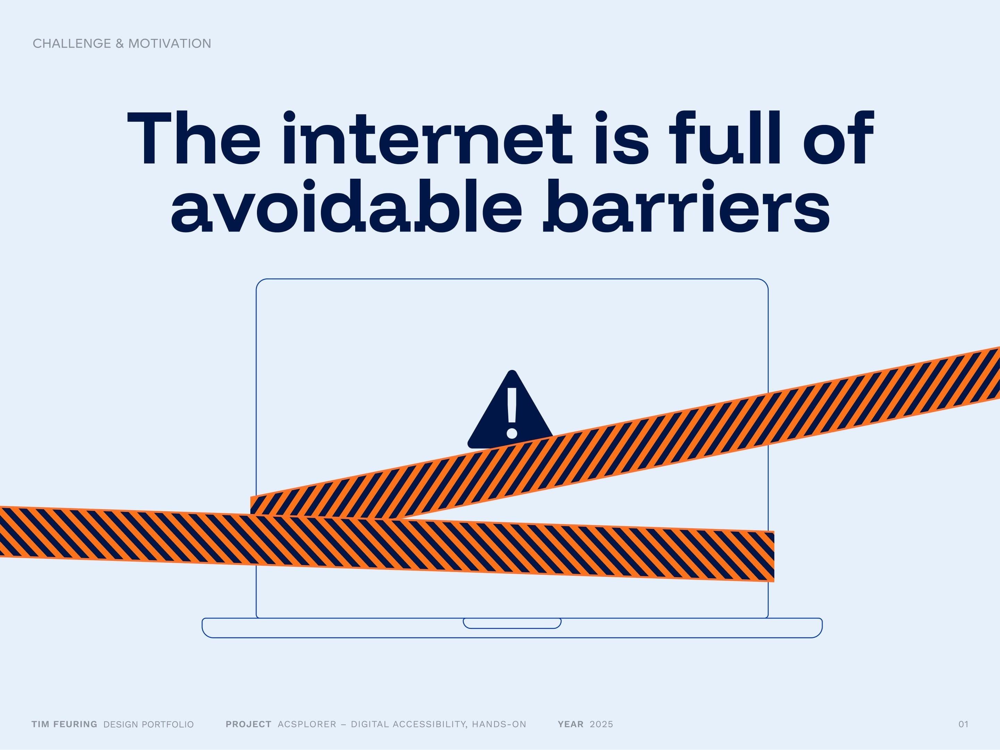
Every day, we use websites, apps and other digital tools to navigate life more easily. Unfortunately, not everybody can. Barriers like low contrasts, small texts or missing keyboard support exclude millions of people. I wanted to find out why this problem still exists and explore approaches to improve the situation. This everyday inequality was the starting point for the Acsplorer.
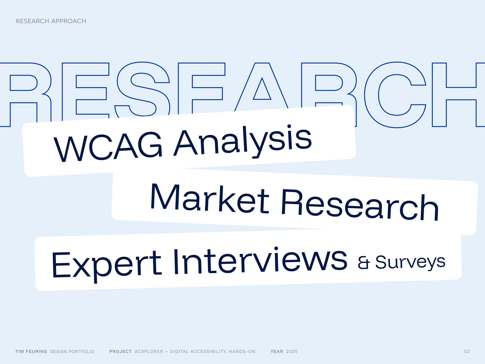
To ground the project with real-world needs and, I applied a multilayered research approach. This included a detailed analysis of the WCAG guidelines, market research into how accessibility is currently handled in digital products and what kind of information sources there are, as well as expert interviews and user surveys to gain practical insights from professionals.
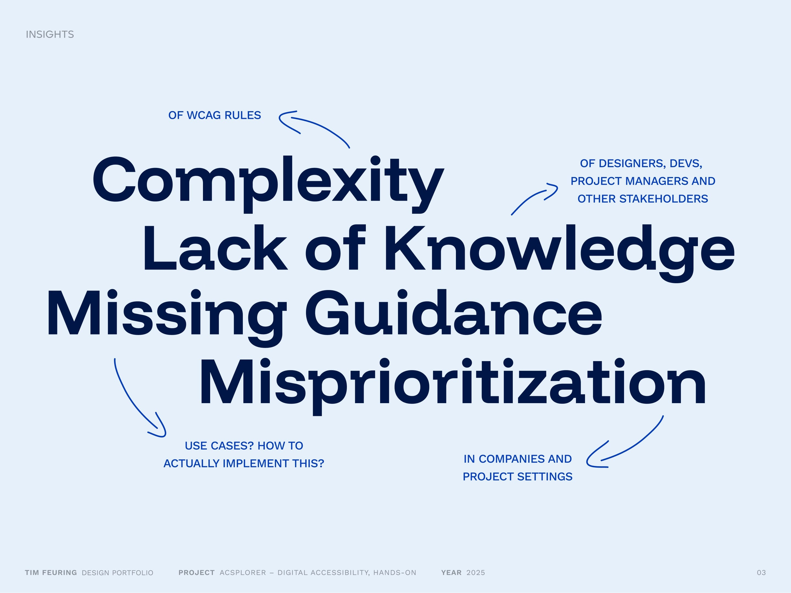
The research revealed several key barriers to accessible design in practice: many teams struggle with the complexity of accessibility requirements, often due to a lack of foundational knowledge. Clear guidance is frequently missing, leaving designers and developers unsure where to start. In addition, accessibility is often misprioritized and seen as a nice-to-have rather than an essential part of the user experience.
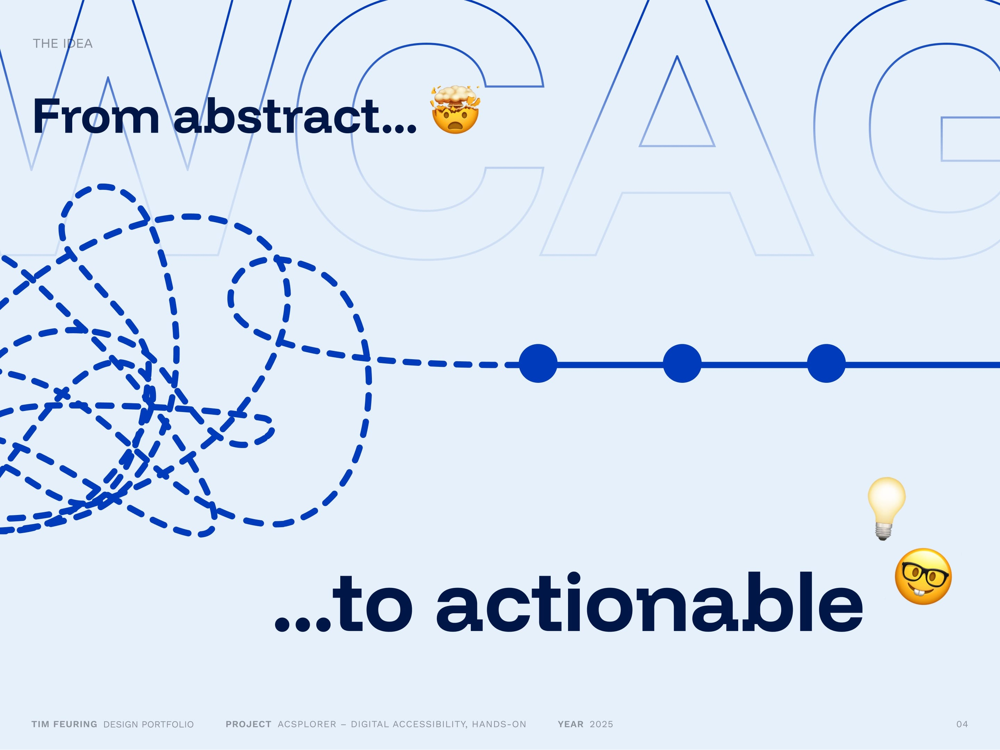
The idea behind the Acsplorer is to make accessibility more approachable: turning abstract WCAG guidelines into something concrete and tangible. By simplifying complex rules and illustrating them through clear, relatable examples, the tool helps bridge the gap between theory and real-world implementation.
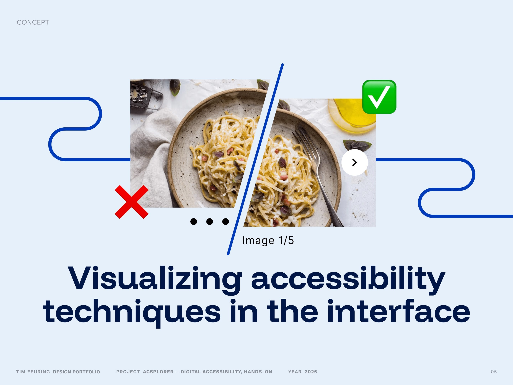
The Acsplorer enables users to experience accessibility adjustments directly within the interface. As changes like contrast, font size, or structure are applied, their effects become immediately visible on interface elements, making the impact of accessible design tangible. This real-time visualization supports learning through interaction rather than theory.
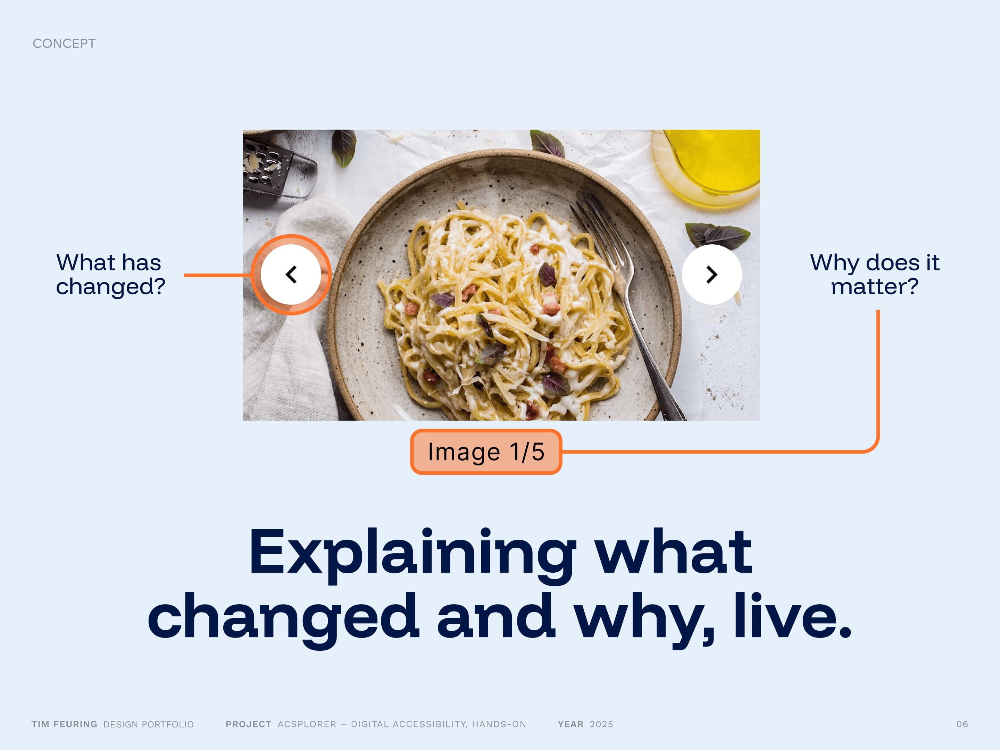
Beyond showing changes, Acsplorer explains the reasoning behind each adjustment. It connects the visual effects to the specific needs they address, such as readability for users with low vision or easier navigation for screen reader users. This context transforms passive observation into informed understanding.
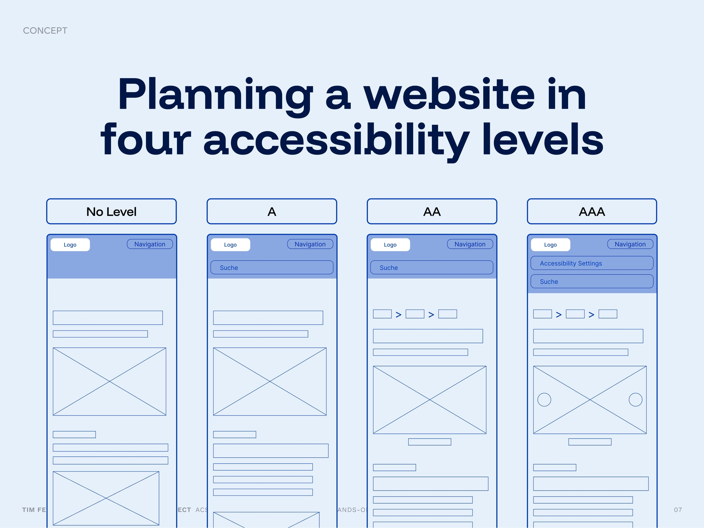
The example website should be experienced in four levels: No WCAG standard, A, AA, and AAA, each reflecting certain accessibility improvements in the interface. This structure helps illustrate how accessibility can grow step by step, making it easier to understand what each level adds. For this, the web interface had to be iterated to four different versions, each reflecting the changes of the respective WCAG level.
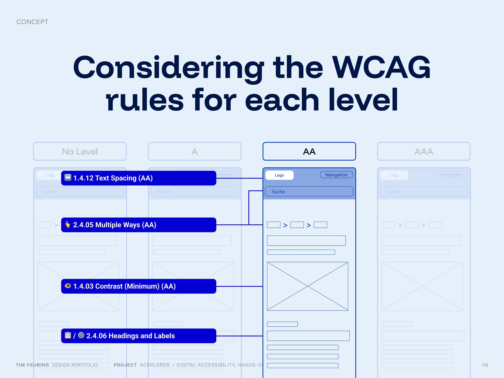
Each accessibility level is guided by the corresponding WCAG criteria, such as text spacing, color contrast or focus visibility. This ensures that every level is not just symbolic, but rooted in actual, testable standards that improve the user experience for people with diverse needs.
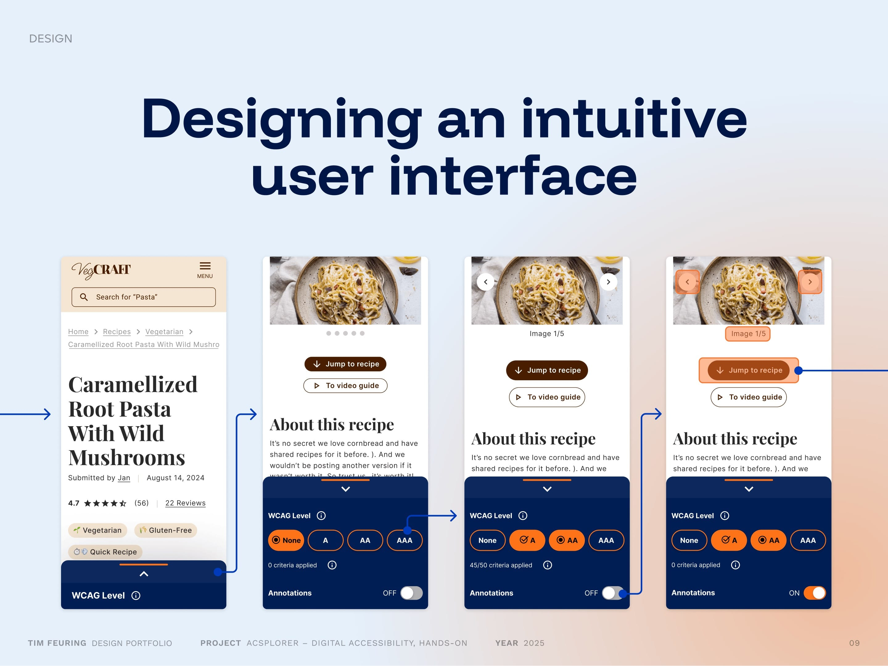
The user interface was designed with clarity and simplicity in mind. Clean UI flows guide users through the experience, allowing them to explore accessibility features without friction.
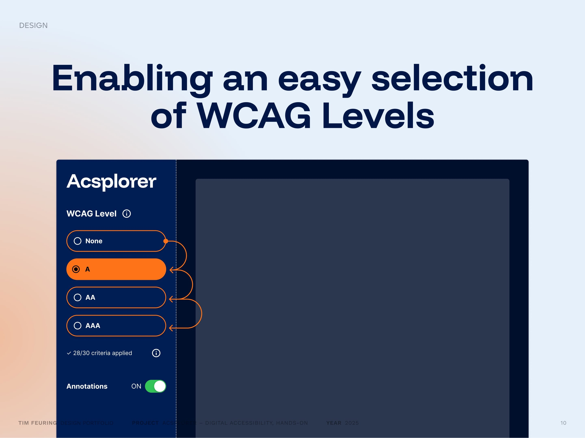
Users can effortlessly switch between the four WCAG levels (None, A, AA, AAA) using an intuitive interaction pattern. This allows for quick comparisons and immediate understanding of how accessibility settings impact the interface.
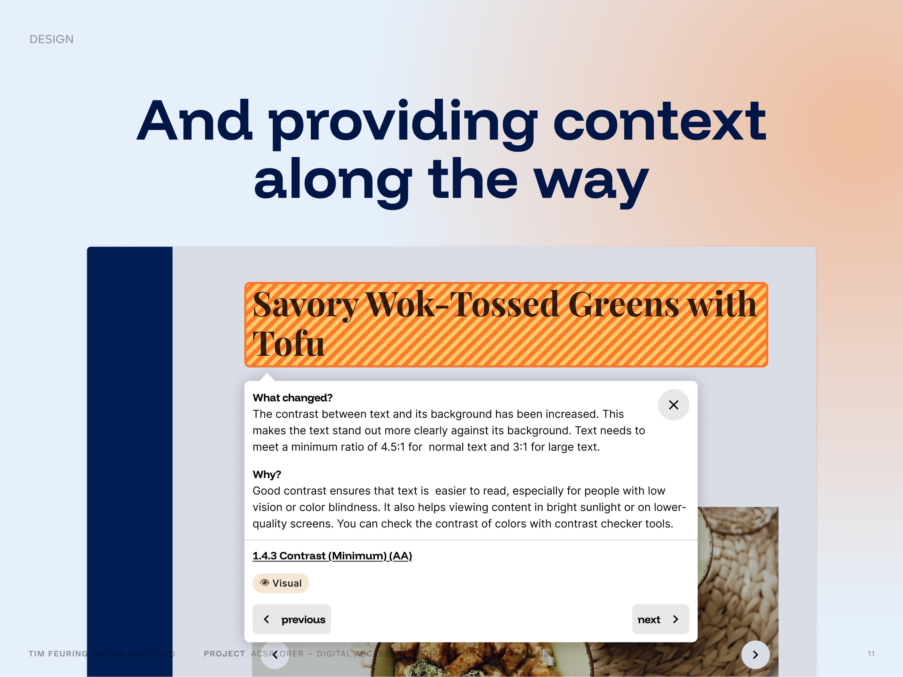
A contextual overlay accompanies each change, explaining what was modified and why it matters. This helps bridge the gap between abstract guidelines and their practical relevance in real-world design decisions.
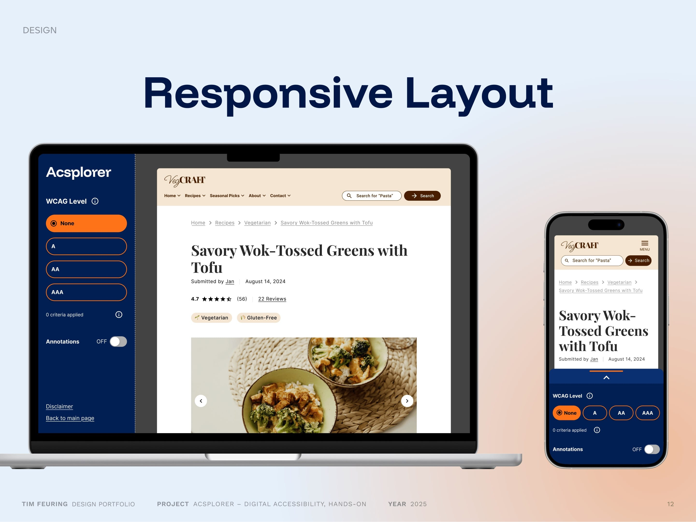
The layout was built to be fully responsive, ensuring the experience is equally accessible and engaging on both desktop and mobile devices.
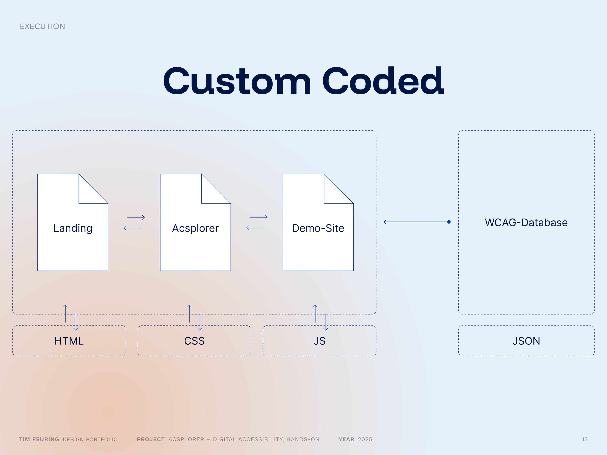
The entire Acplorer project was developed from scratch, using HTML, CSS, and JavaScript. No frameworks or prebuilt libraries were used — everything was handcrafted to retain full control over the sites behavior.
To round off the presentation, a short video offers a look at the printed version of the theoretical thesis. It gives a tactile glimpse into the research foundation that supports the Acsplorer project.